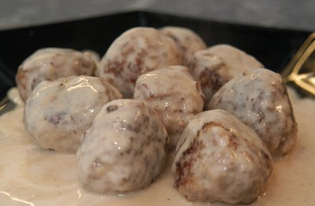

| Zutaten für 4 Personen: | |
| 400 g | gehacktes Schweinefleisch |
| 1 | Zwiebel |
| 2 EL | Paniermehl |
| 1 TL | Salz |
| 1 | Ei |
| 1/4 TL | Oregano |
| 1 Prise | Pfeffer |
| 3 EL | Fett |
| Sauce: | |
| 2 EL | Mehl |
| 3 dl | Bouillon |
| 150 g | saurer Halbrahm |
| 3 EL | Milch |
| zum garnieren: | |
| 1 | 8 Minuten-Ei |
| 2 Zweige | Petersilie |
| 2 | Cornichons |
| 1 EL | Kapern |
Das Ei für die Garnitur 8 Minuten kochen.
Schweinefleisch mit fein gehackter Zwiebel, Paniermehl, Salz, Ei, Oregano, Pfeffer locker mischen (nicht kneten). Aus der Masse 20 Kugeln von ca. 2 cm Durchmesser formen.
Im Fett bei mittlerer Hitze 5 - 8 Minuten braten. Kugeln aus der Pfanne nehmen.
Sauce:
Mehl im verbliebenen Fett dazu sieben und dämpfen. Mit Bouillon ablöschen. Sauce glatt rühren und auf kleinem Feuer ca. 5 Minuten leise kochen lassen.
Den sauren Halbrahm mit der Milch verrühren. Sauce damit verfeinern.
Fleischkugeln in die Sauce geben und durchwärmen (nicht kochen). In eine vorgewärmte Platte geben und warm stellen.
Petersilie, Ei und Cornichons fein hacken und mit den Kapern über das Gericht streuen.
Herbert Eigenmann, Code: FKS
Getestet 31.1.1996 von RE. Dem Gericht fehlt die Beilage. In Frage kämen Nudeln oder Reis. Ich kochte mit Reis. Ich verrechnete mich mit der Kochdauer. Es geht eher eine halbe Stunde denn eine Viertel bis das Essen auf dem Tisch steht. Aber die Sauce hat mich über alle massen überrascht. Idealerweise fügt man ihr noch Morcheln oder sonst Pilze bei. Die Zwiebel mit einem scharfen Messer ganz fein hacken und nicht zu viel beimengen.
Am 21-1-2008 nochmals gekocht für das Foto. Gelang so-so. 3 cm Kügelchen sind wohl etwas gross. Gibt auch nie 20 Stück! Folglich auf 2 cm abgeändert. Gab ein bisschen ein gejätt und Salz hatte ich etwas gar bescheiden dosiert. RE
Vergleiche auch "Griechische Fleischkügeli", Betty Bossi, "100 Wunder Rezepte, Ghackets, Würscht und Gschnätzlets", Seite 16
@LINKBACK_TAG@ @WAKELOCK@